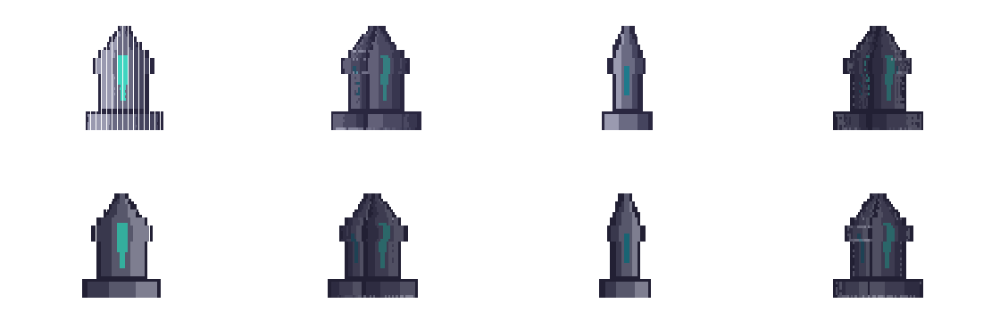
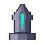
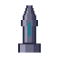

{kind=link}
Problem
Identity drift
방향별 생성 결과가 같은 오브젝트처럼 보이지 않는 문제가 반복된다. 캐릭터보다 프롭·문·제단 같은 방향성 소품에서 먼저 검증했다.
정면과 측면 2D 컨셉을 visual hull 방식으로 복셀화하고, 게임 제작에 넘길 수 있는 8방향 reference sprite와 검증 manifest를 생성한 실험이다.


input/front.png
input/side.pngAI 이미지 생성은 단일 컷을 빠르게 만든다. 문제는 게임 제작이다. 방향별 실루엣이 흔들리거나, 후처리할 기준이 없거나, 엔진이 먹을 manifest 없이 PNG만 남으면 실제 파이프라인에 들어가지 못한다.
방향별 생성 결과가 같은 오브젝트처럼 보이지 않는 문제가 반복된다. 캐릭터보다 프롭·문·제단 같은 방향성 소품에서 먼저 검증했다.
최종 아트를 바로 만들지 않고, front/side 실루엣에서 8방향 reference를 먼저 만든다. 사람이 후처리할 기준을 고정하는 단계다.
8방향 PNG, contact sheet, manifest, SHA-256을 생성하고 verify 명령으로 재현 가능성을 확인했다.
이 도구는 3D 모델러가 아니다. 기존 sprite pipeline 앞에 붙는 선택적 prepass다. 목적은 "보기 좋은 그림"이 아니라 "후처리 가능한 방향별 기준"을 만드는 것이다.
$ cd "/Users/godju/Downloads/AI Game/hwigi-tower" $ ./Tools/VoxelTurnaround/run_demo.sh Built demo_obelisk: 10007 occupied voxels, 3117 surface voxels PASS voxel-turnaround verification - occupied voxels: 10007 - surface voxels: 3117 - renders checked: 8
포트폴리오용 주장은 모두 demo run에서 나온 값만 쓴다. 이 페이지는 "AI로 만들었다"가 아니라 "검증 가능한 에셋 생산 단계를 만들었다"는 증거를 보여준다.
Generated demo contact sheet. The page embeds the same tracked PNG that the portfolio can reference on GitHub.
| tool | voxel-turnaround |
|---|---|
| assetId | demo_obelisk |
| occupiedVoxels | 10007 |
| surfaceVoxels | 3117 |
| contactSheet SHA-256 | 628037bb782ee83bfe90d85db618fd0381df86fa8d0dfb958089627e5c5822d5 |
최종 계약은 기존 게임 에셋 파이프라인을 바꾸지 않는다. voxel 결과는 PerfectPixel, sprite-gen, Aseprite 앞단의 reference와 QA 기준으로만 사용한다.
탑 조각, 문, 제단, 상자, 보스 장식물처럼 방향성은 필요하지만 rigging은 필요 없는 에셋에 먼저 적용한다.
오목한 구조와 topology는 복원하지 못한다. 캐릭터 애니메이션 프레임 생성도 별도 단계로 남긴다.
front/side concept -> voxel turnaround prepass -> 8-direction reference PNGs + manifest.json -> PerfectPixel / sprite-gen / Aseprite refinement -> sprite-sheet.png + runtime manifest -> Unity / libGDX / Godot importer
이 케이스스터디의 핵심은 복셀 자체가 아니라, AI가 만든 시각물을 게임 제작에 들어갈 수 있는 검증 가능한 중간 산출물로 바꾸는 방식이다.